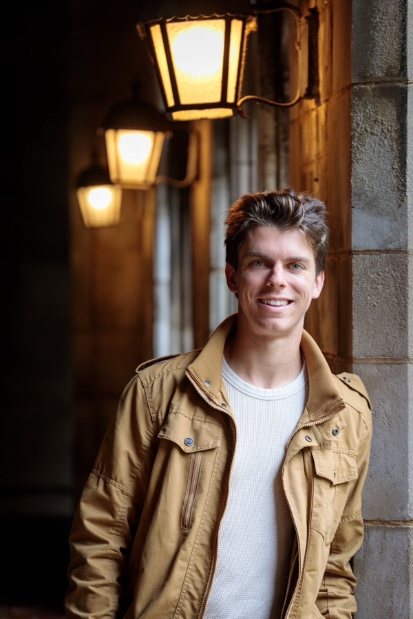

About the Fellowship
The Academy Fellowship is a six-week philosophy program for exceptional high school students run by the New York Philosophical Society. Fellows read through the Great Books, meet weekly in extended seminar, and test their ideas through close dialogue with faculty and peers.
The program takes place in Midtown Manhattan from July 13 through August 23, 2026. Fellows meet one to two times per week in person for extended seminar and are expected to complete 10–15 hours of independent reading to prepare for each session.
The program is entirely free of charge. Students with financial need receive a stipend to cover materials and transportation.
Vision & Mission
We believe philosophy is not a subject. It is a practice — the oldest and most urgent one we have. Our mission is to recover that practice in the life of young New Yorkers, and to build a community where the examined life is not an aspiration but a living reality.
The New York Philosophical Society was founded on the conviction that meaning and human connection can be restored through the shared pursuit of wisdom. The Academy Fellowship is the most intensive expression of that conviction.
Our Team

Harrison studied Mathematics and Philosophy at the University of Chicago before beginning his career at Bridgewater Associates. Harrison leads the admissions and interview process for the Fellowship.
After studying Classics at Harvard University, Cole received a full scholarship to study Ancient Philosophy at the University of Oxford, where he taught Ancient Greek for two years. His research in the philosophy of medicine has been published in academic journals. Cole co-founded NYPS and speaks nine languages.
Contact
For questions about the Academy Fellowship, please reach out to us at fellowship@nyphilosophy.org.
The New York Philosophical Society is located in New York City. The Academy Fellowship holds seminars in Midtown Manhattan.